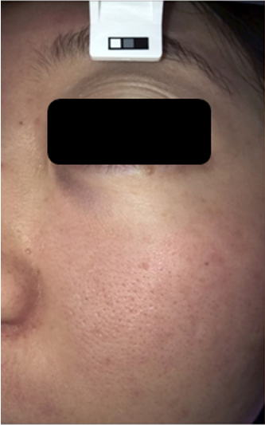
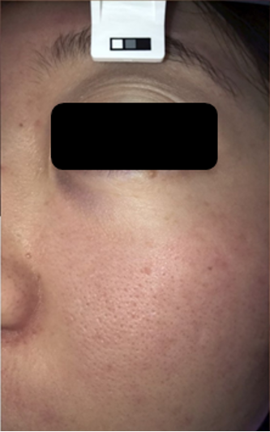
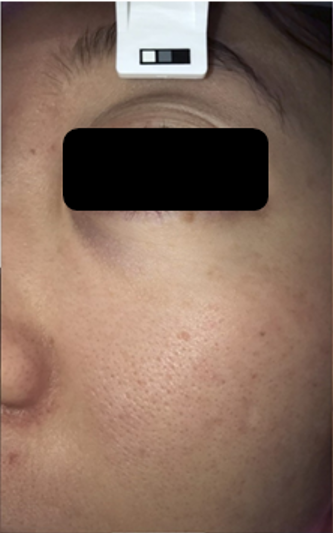
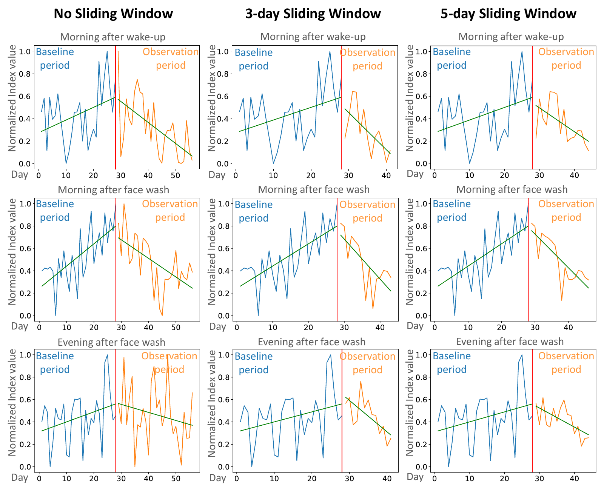
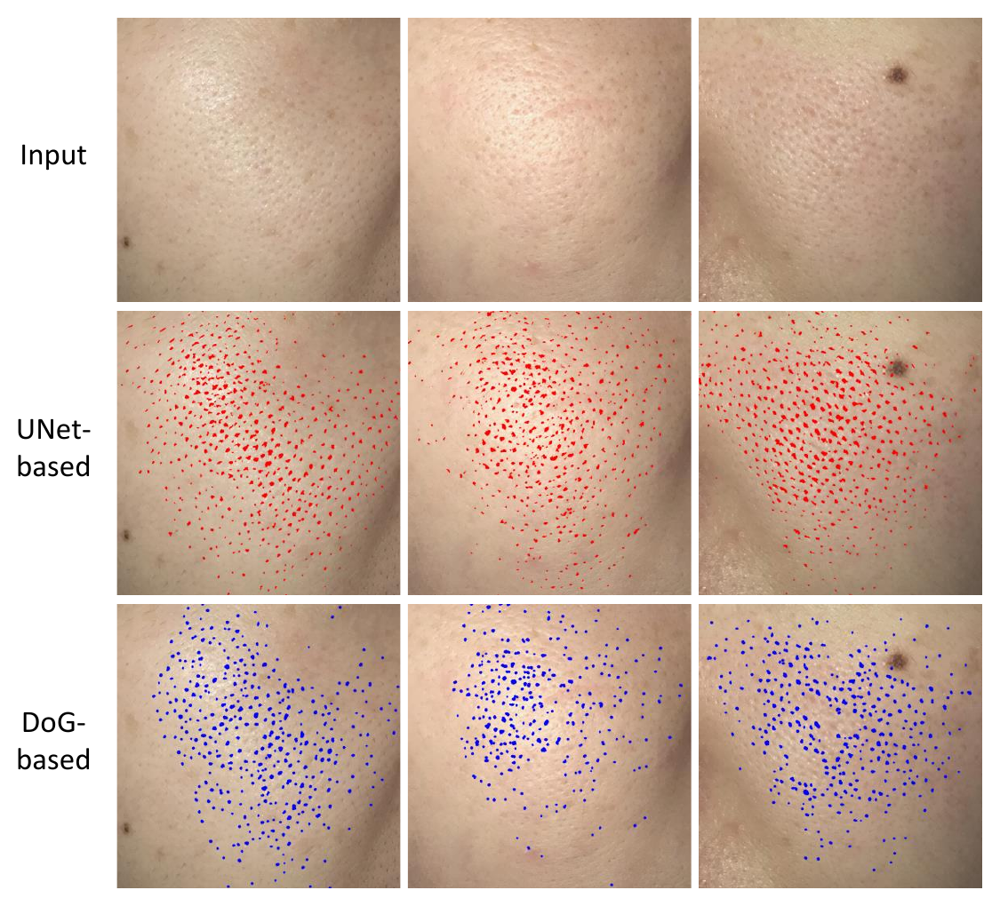
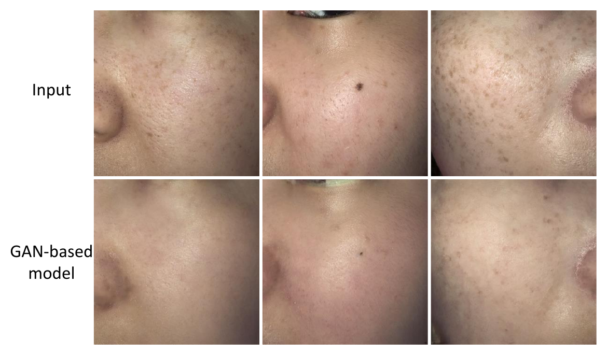

The task
Given a subject’s initial facial image and a target time window, simulate the local appearance of pores after short-term skincare use.
Electronic Imaging 2023 · Research Project
A data-driven system that predicts and visualizes subtle, time-dependent facial pore changes while preserving the surrounding facial structure.
Given a subject’s initial facial image and a target time window, simulate the local appearance of pores after short-term skincare use.
Computer vision for skin has focused mainly on medical lesion analysis, while cosmetic applications remain comparatively limited. A realistic preview makes gradual skincare changes easier to inspect.
Pores have delicate shapes and sizes, require high-quality images, and respond strongly to lighting. Daily fluctuation obscures the treatment trend, while every subject starts from a different skin condition.
Research visualization only. The simulation does not provide medical advice or guarantee product efficacy for an individual.
Select a participant and time window, then drag the divider to compare the observed image with the simulated result.
Initial condition

Target condition


The system first learns a clean longitudinal trend, then turns a predicted time-dependent parameter into a localized pore deformation.

A sliding-window procedure reduces measurement fluctuation while retaining the subject-specific skincare trend.

A learned segmentation model provides a stable pore mask, enabling edits to remain spatially constrained.
A photocopy filter extracts facial detail, followed by morphological processing and thresholds for pore area, size, and shape. Manual checking refines the generated labels before UNet training.
Random Forest regression learns a subject-specific warping parameter from the initial skin condition and the selected time window.
A modified Local Scaling Warp constructs a pixel-level flow field and applies bilinear interpolation. The optimized implementation processes a 1920 × 1080 image in 5–10 seconds.
4.1
The learned model improves pore localization over a Difference-of-Gaussians baseline across all reported measures.
| Method | Dice ↑ | IoU ↑ | Precision ↑ | Accuracy ↑ |
|---|---|---|---|---|
| DoG | 0.4418 | 0.2851 | 0.4388 | 0.9896 |
| Ours | 0.6663 | 0.5139 | 0.6790 | 0.9936 |
4.2
The Random Forest regression closely follows the cleaned clinical trends across all three time windows. The interactive comparison above contains the corresponding real and simulated images, so this section focuses on the quantitative evidence.
| Window | R² ↑ | MAE ↓ |
|---|---|---|
| TW1 | 0.9905 | 0.6344 ± 2.20 |
| TW2 | 0.9941 | 0.6039 ± 1.85 |
| TW3 | 0.9564 | 1.3498 ± 5.12 |
4.3
Thirty respondents evaluated simulation realism and segmentation quality. More than 90% rated the real and simulated results as similar or very similar, and over 80% were satisfied with the simulation.
4.4
A direct GAN baseline can introduce broader appearance changes. The proposed approach explicitly confines the transformation to detected pore regions, improving control and interpretability.
